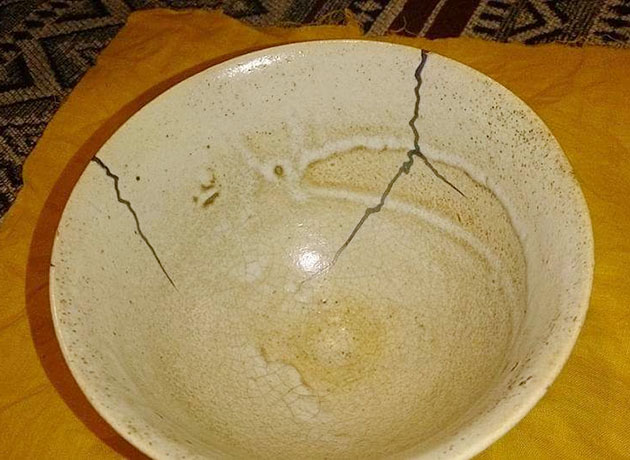
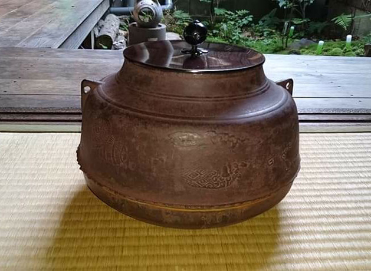
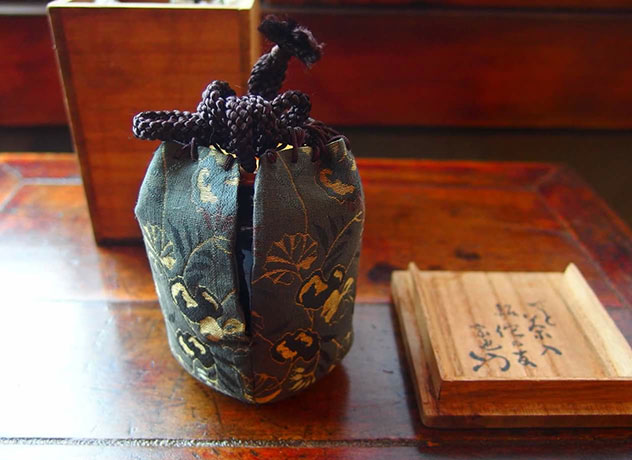
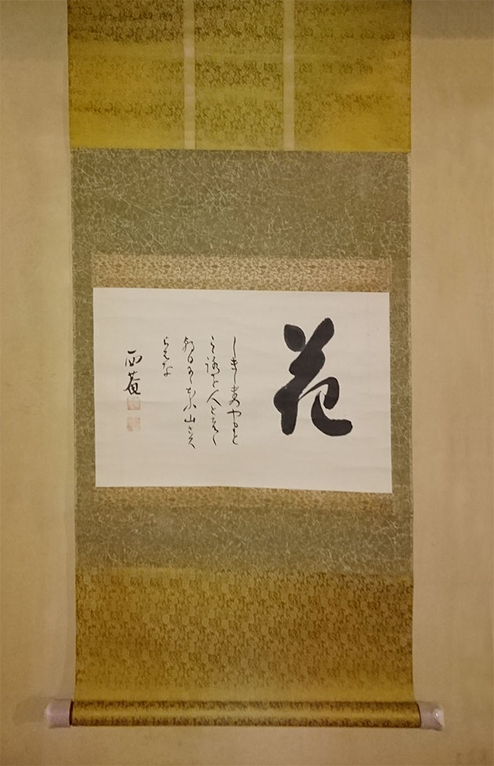

茶碗・茶入の修理
茶碗・茶入などの割れや欠けについて、金継ぎなどの修理をご案内いたします。 状態を確認したうえで、用途やご希望に合わせて修理方法をご提案いたします。
目安：5,000円〜
REPAIR
大切な茶道具を、これからも永くお使いいただくために。 状態を見極めながら、修理・仕立てをご案内いたします。
CARE & RESTORATION
茶碗、茶入、釜、鉄瓶、掛軸など、茶道具の修理や仕立てについてご相談を承ります。 破損の状態や素材、用途に合わせて、適した修理方法をご案内いたします。

REPAIR MENU
茶碗・茶入などの割れや欠けについて、金継ぎなどの修理をご案内いたします。 状態を確認したうえで、用途やご希望に合わせて修理方法をご提案いたします。
目安：5,000円〜

釜や鉄瓶などの錆、傷み、水漏れなどについてご相談いただけます。 状態に応じて、使用を続けるための修理方法をご案内いたします。
目安：15,000円〜

茶入に合わせた仕覆の作成をご相談いただけます。 裂地や寸法を確認し、道具にふさわしい仕立てをご案内いたします。
目安：13,000円〜

掛け物の表装替え、傷み、しわ、汚れなどの補修をご相談いただけます。 状態を見ながら、長く掛けていただける形に整えます。
目安：35,000円〜
FLOW
修理をご希望の道具について、まずはお問い合わせください。
写真や現物を確認し、破損や劣化の状態を拝見いたします。
修理方法、費用、期間の目安をご案内いたします。
ご了承後に修理を進め、完了後にお渡しいたします。
修理費用は、道具の状態や素材、修理方法によって変わります。 掲載している価格は目安ですので、まずはお気軽にご相談ください。
状態が分かる写真を添えていただくと、より具体的にご案内できます。